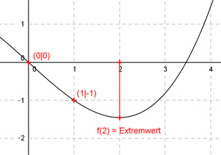

Aufgabe 32 Der Graph einer ganzrationalen Funktion 3. Grades ist punktsymmetrisch zum Nullpunkt, geht durch (1|-1) und hat einen Extremwert an der Stelle x = 2. Wie lautet seine Funktionsgleichung?  Allgemeine Form einer ganzrationalen Funktion 3. Grades punktsymmetrisch zum Nulllpunkt: f(x) = ax3 + cx f’(x) = 3ax2 + c f’’(x) = 6ax 2 Bedingungen: 1. Geht durch (1|-1) bedeutet: f(1) = -1 --> a * 13 + c * 1 - 1 --> a + c = - 1 I 2. Hat einen Extremwert an der Stelle x = 2 bedeutet: f’(2) = 0 --> 3a * 23 + c = 0 --> 12a + c = 0 II I * (-1) + II -a - c = 1 12a + c = 0 ------------- 11a = 1 |: 11 a = 1/11 a = 1/11 in I eingesetzt: 1/11 + c = -1 |-1/11 c = -11/11 - 1/11 c = -12/11 Gesuchte Funktionsgleichung: f(x) = (1/11)x3 - (12/11)x